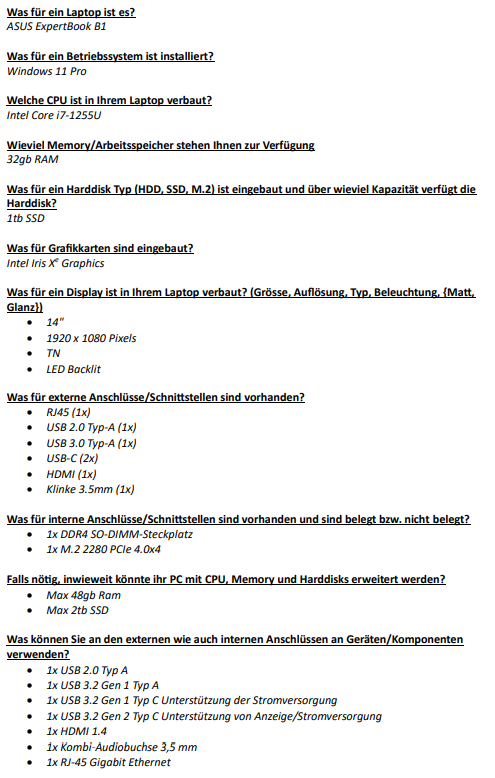

System, Lerne dein Notebook kennen.
Lerne aus was Systeme bestehen und wie sie Funktionieren.
Mein Laptop, lernen dein System kennen
Am Montag haben wir im Rahmen des Auftrags "Mein Laptop" mehrere Fragen beantwortet und ein Word-Dokument zu unserem Blatt hinzugefügt. In dieser Aufgabe haben wir unser System kennengelernt. Wir haben 11 Fragen beantwortet, und diese lauteten:
- Was für ein Laptop ist es?
- Was für ein Betriebssystem ist installiert?
- Welche CPU ist in Ihrem Laptop verbaut?
- Wieviel Memory/Arbeitsspeicher stehen Ihnen zur Verfügung?
- Was für ein Harddisk Typ (HDD, SSD, M.2) ist eingebaut und über wieviel Kapazität verfügt die Harddisk?
- Was für Grafikkarten sind eingebaut?
- Was für ein Display ist in Ihrem Laptop verbaut?
- Was für externe Anschlüsse/Schnittstellen sind vorhanden?
- Was für interne Anschlüsse/Schnittstellen sind vorhanden und sind belegt bzw. nicht belegt?
- Falls nötig, inwieweit könnte ihr PC mit CPU, Memory und Harddisks erweitert werden?
- Was können Sie an den externen wie auch internen Anschlüssen an Geräten/Komponenten verwenden?
Fazit
Ich habe einiges über meinen Laptop gelernt und auch allgemein über Laptops. Ich wusste nicht, dass es zum Beispiel Grenzen für das Aufrüsten gibt. Ich habe die einzelnen Komponenten kennengelernt. Ich bin sehr gut vorangekommen und konnte daraufhin eine gute Präsentation über meinen Laptop halten.